Built-in preset lookbook
Find a look by subject and see what it does to a reset photo at 100% Amount. Atelier rendered each pair using the same Develop controls you can edit in the app.
Start with Presets to learn how to preview, apply and adjust the strength of a look. Film and print presets are creative interpretations. The original light, camera profile and existing edits influence the result.
Atelier
Clean Product
Best for Studio objects and white backgrounds. Brighter whites, open object shadows and restrained texture. Compare the background and shadow detail on the camera body.
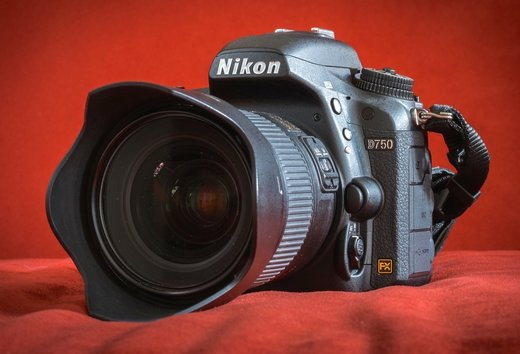
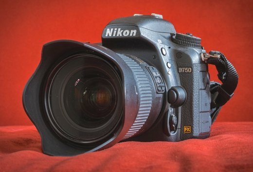
Fine Art & Pigments
Best for Photographs of paintings and prints. A modest paper-white lift and clearer paper texture. Compare pigment hues and the lightest washes. Start with a neutral capture.
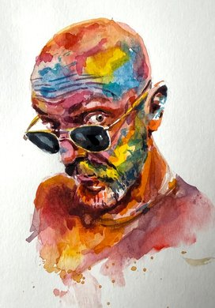
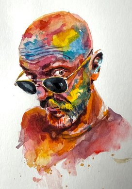
Punchy
Best for Flat travel and everyday scenes. More midtone contrast and color separation, with legible shadows. Look at the faces of buildings and the brighter signs.
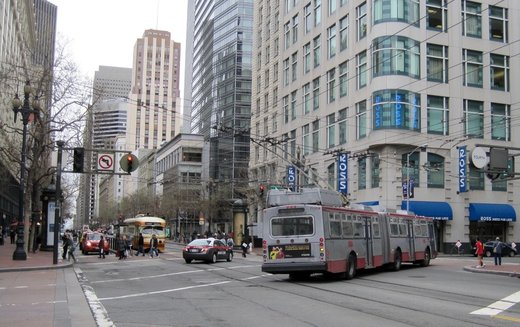
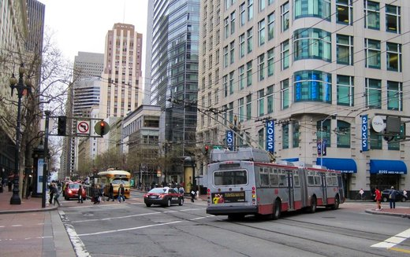
Film
Portrait 400
Best for Daylight portraits and weddings. Soft highlight roll-off, a small shadow lift and restrained color around skin. Fine, soft-edged grain.
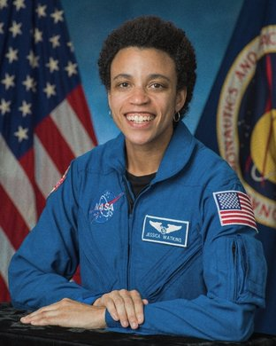
Gold 200
Best for Sunlit snapshots and travel. Amber warmth, rich red and yellow details and fine grain. Compare the warmer facades and the color of the sky.
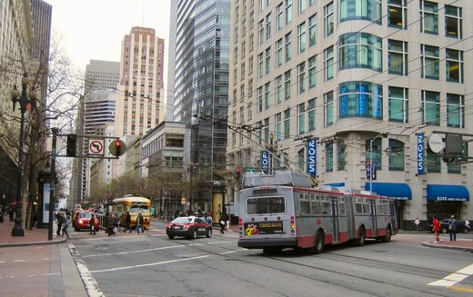
Pastel 400
Best for Open-shade and outdoor portraits. Brighter lower midtones, muted greens and blues, cooler shadows and a faint pink highlight tint. Fine, soft-edged grain.
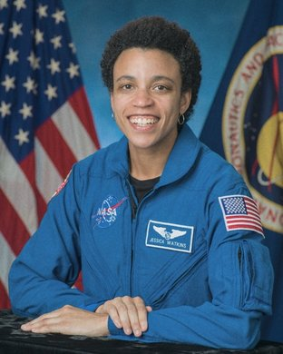
Vivid 100
Best for Colorful travel and architecture. Saturated reds and clear blues with fine grain. Compare with Vivid Slide for more open shadows.
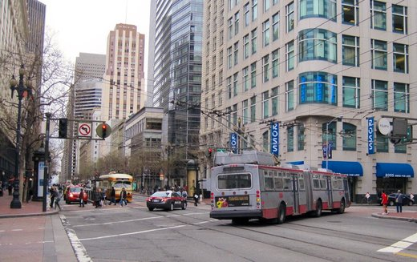
Vivid Slide
Best for Sunlit landscapes and bold natural color. Deep blues and greens, firm shadows and crisp highlight separation. Look at the valley and the clouds.
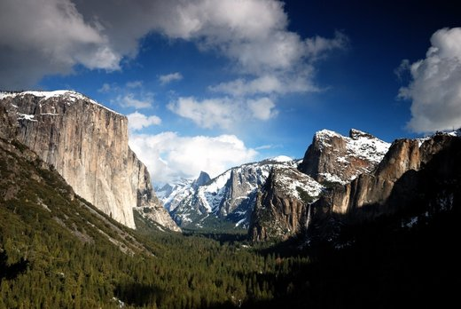
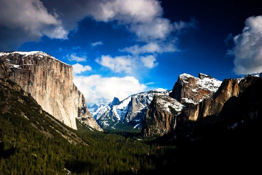
Chrome 64
Best for Daylight documentary and travel. Richer brick reds and deeper blues, with more subdued greens and overall saturation than Vivid Slide. Fine grain.
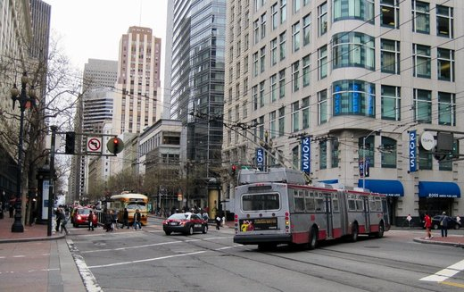
Tungsten 800T
Best for Mixed-light streets and bright practical lights. Cool shadows, visible fine-textured grain and red-orange halation around the brightest signs. The glow depends on nearby dark tones.
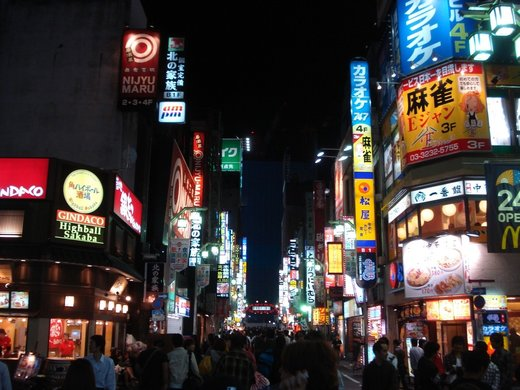
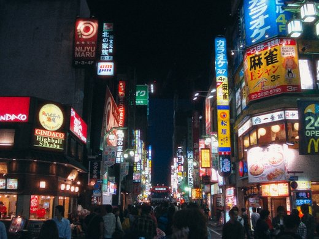
Expired
Best for Creative faded snapshots. Fogged blacks, a green-to-pink color shift and uneven-looking coarse grain. Age and storage give real expired film a wide range of looks.
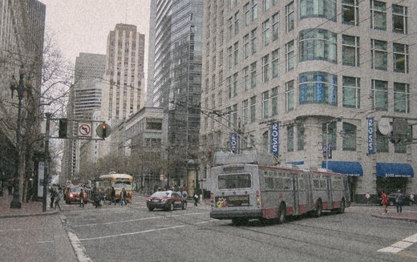
Instant
Best for Casual portraits and snapshots. Creamy highlights, raised blacks, soft contrast and darker corners. Compare the face and the frame edges.
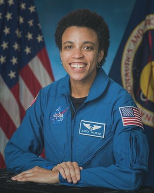
Black & White
Neutral
Best for A plain starting point for monochrome. Even grayscale with Atelier's default B&W Mix. Check that there's no added curve, grain or toning when applied to a reset photo.
Silver Gelatin
Best for Monochrome landscapes and gallery prints. Dense shadows, bright whites and a barely visible cool-shadow and warm-highlight split. Look for detail in the pale rock.
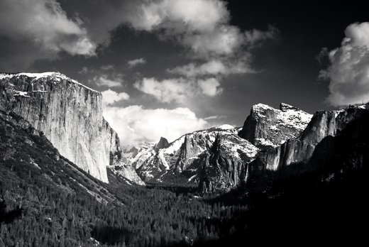
Classic 400
Best for Everyday monochrome reportage. Crisp detail, a mild yellow-filter effect and visible classic grain. Compare the sky and the building surfaces.
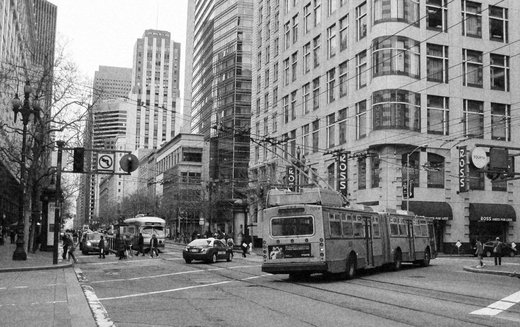
Push 400
Best for Hard, grainy monochrome reportage. Coarse grain, strong contrast and harder shadows than Classic 400. Inspect grain at 100%.
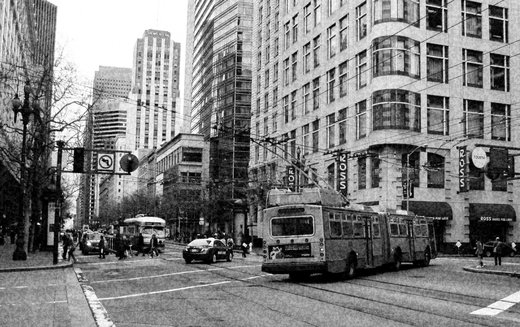
Dark Sky
Best for Monochrome landscapes with blue skies. Blue sky and cyan tones darken while warm rock and clouds stay bright. The effect depends on the original sky color.
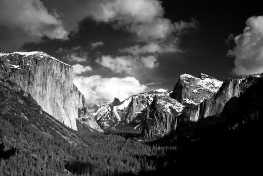
Infrared Glow
Best for Sunlit foliage and landscapes. Greens and yellows become lighter, blues turn very dark, and bright edges bloom softly. The recipe works from visible colors.
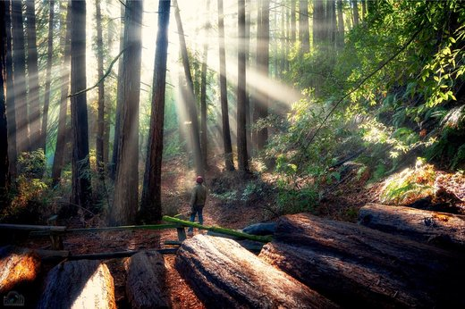
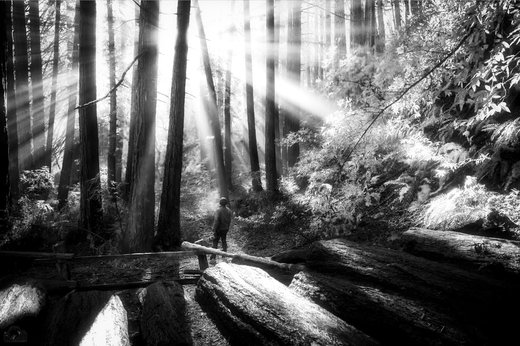
Selenium
Best for Subtly toned monochrome prints. Dense blacks with a faint plum shift in the darker tones and near-neutral highlights. Compare with the warmer Sepia.
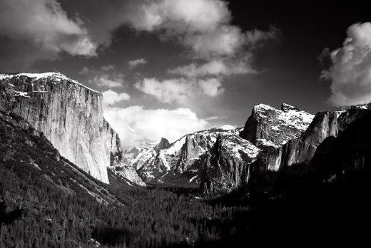
Sepia
Best for Warm archival-style portraits. Chocolate-brown shadows, warm midtones and lighter cream highlights. Look for warmth across the grayscale image.
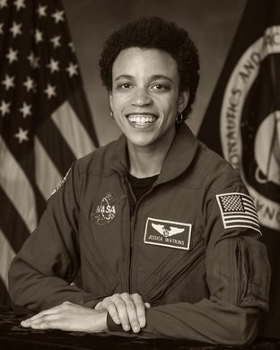
Portrait
Natural Skin
Best for Everyday portraits. Gently reduced reds and oranges, a small lift in skin mids, and slightly softer texture. Compare cheeks and hands.
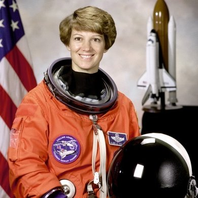
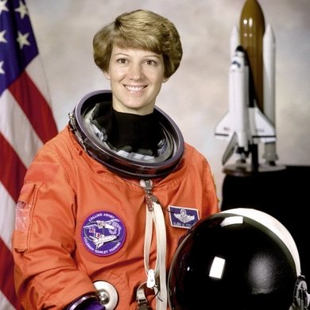
Bright & Airy
Best for Bright, open-shade portraits and weddings. Lifted skin mids and open shadows, lighter surrounding colors, and recognizable dark tones. Look at the face and dark fabric.
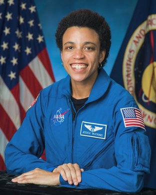
Soft Glow
Best for Backlit portraits and soft window light. Gentle diffusion and softer texture with warm light spilling at bright edges. Compare the cheek highlights and edge detail.
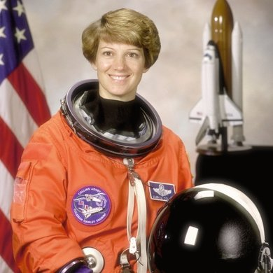
Rich Skin
Best for Portraits with deeper skin tones. Open shadows and restrained golden warmth. Look for definition in the face without a strong red or yellow shift.
Clean Studio
Best for Studio headshots and fashion. Crisper tonal separation with controlled skin saturation and clean light areas. Compare fabric and facial texture.
Moody Portrait
Best for Low-key editorial portraits. Deeper surroundings and subdued background color with warmer skin mids. The vignette concentrates attention toward the center.
Landscape
Dramatic Sky
Best for Landscapes with bright textured clouds. A darker blue sky and more cloud texture, with less pressure on foreground shadows. Inspect the ridgelines for halos.
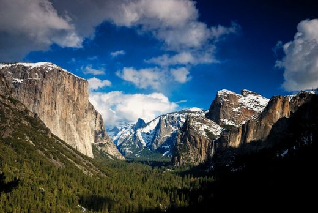
Golden Hour
Best for Already warm side light and late-day landscapes. Amber sunlit rock and vegetation, with cooler shadow separation. Compare the lit cliff to the sky.
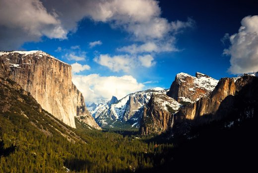
Blue Hour
Best for Twilight and city scenes with warm lights. Cobalt-blue midtones and deeper shadows separate warm practical lights from the cooler surroundings. The strongest fit is an already cool scene.
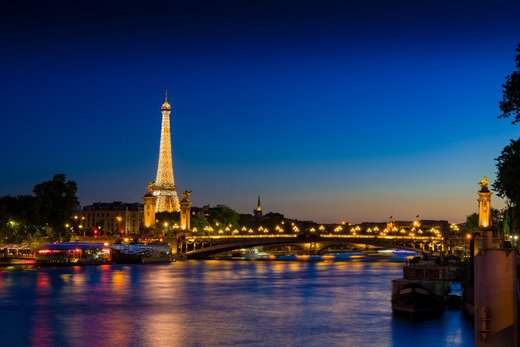
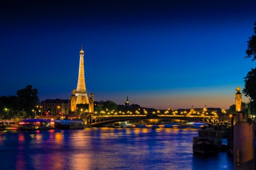
Deep Greens
Best for Forests and backlit leaves. Deeper pine greens, darker foliage shadows and warmer shafts of light. Compare the green leaves to the lit path.
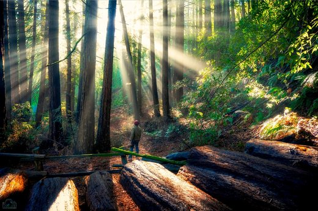
Autumn Colors
Best for Woodland with yellow and turning foliage. Yellow-green foliage leans toward amber and existing oranges and reds become stronger. Compare leaves and bark.
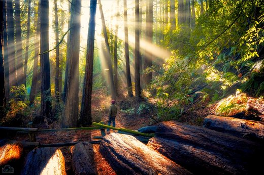
Haze Cut
Best for Distant hills and haze. Stronger distant contrast and clearer ridgelines. Check the horizon edge and reduce Amount on already clear air.
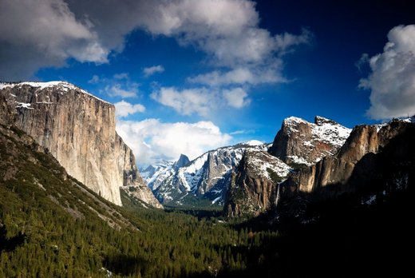
Wildlife & Detail
Best for Feathers and fur. More fine subject texture, brighter warm details and more subdued surroundings. Compare the wing feathers and beak.
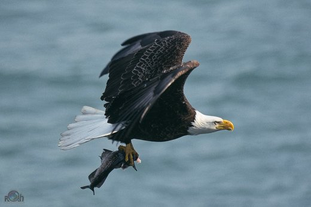
Street
Muted Chrome
Best for Documentary street and subdued travel. Reduced blue and green saturation, firm shadows and restrained color that leaves reds readable. Compare the signs and the sky.
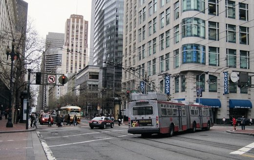
Hard Light
Best for Direct sunlight and graphic street scenes. Deep shadow shapes and bold primary colors. Check separation in the street shadows before raising Amount.
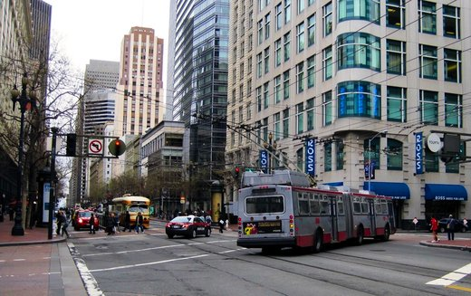
Copper Negative
Best for Daylight street with warm brick and cool pavement. Contrasting copper reds and cyan-slate shadows, with visible classic grain. Compare warm signs to cool surfaces.
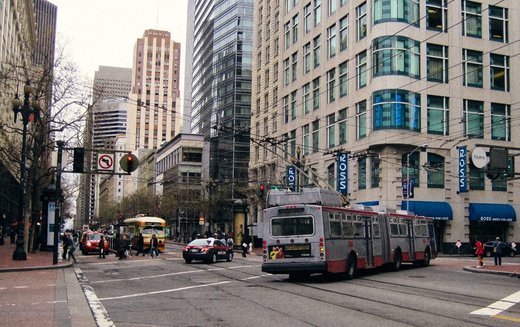
Cinematic
Teal & Orange
Best for Cinematic portraits and mixed light. Teal-biased darks and warm orange mids, with less emphasis on greens. Check skin before increasing Amount.

Bleach Bypass
Best for Industrial, editorial and desaturated cinema. Hard darks, metallic highlights and color muted enough to approach monochrome. Compare the remaining colors in signs and vehicles.
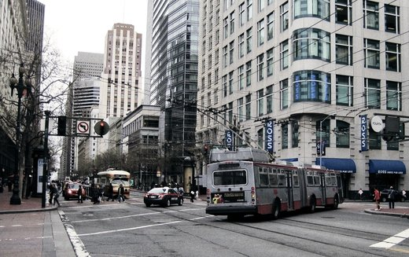
Noir
Best for Low-key city and nighttime monochrome. Deep black-and-white contrast, bright pools of light and darker corners. Look at bright signage and shadowed edges.
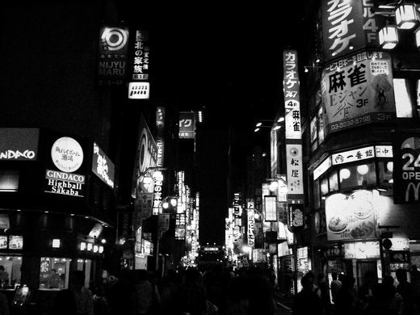
Night City
Best for Neon signs and urban night. Stronger cyan and magenta accents with deeper midnight shadows. Check that bright sign detail remains legible.
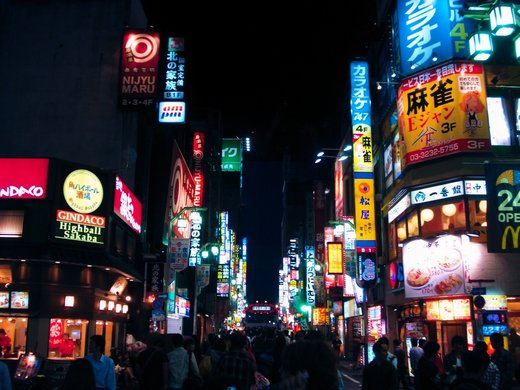
Warm Drama
Best for Warm cinematic exteriors. Bronze shadows and ochre midtones with less blue and green saturation. Compare sunlit rock and the subdued cool colors.
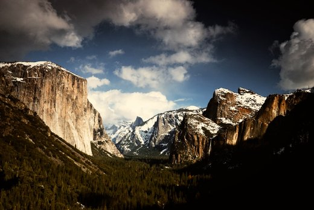
Vintage & Matte
Faded Matte
Best for Muted editorial prints and street. Lifted charcoal blacks and softer highlights with some midtone contrast. Look at the deepest shadows for a restrained cast.
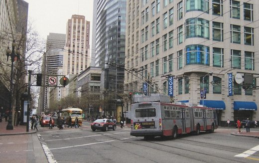
Seventies
Best for Retro snapshots and warm street color. Mustard yellows, terracotta reds, softened blues and lightly faded blacks. Compare street signage and pale walls.
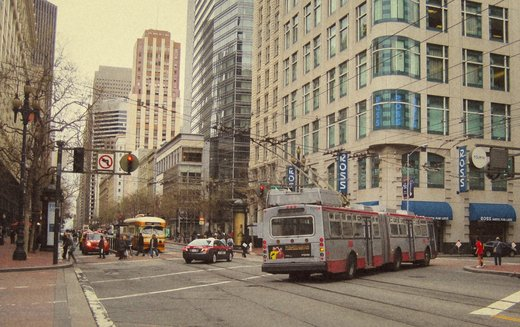
Midcentury Postcard
Best for Travel views with blue sky and warm details. Soft turquoise blues, coral warmth and gently lifted shadows. Compare the sky with the sunlit rock.
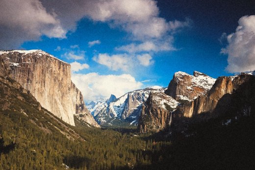
Cross Process
Best for Creative street and color experiments. Strong green-cyan shadows and yellow highlights from deliberately skewed color curves. Compare pale facades and the color of shadowed surfaces.
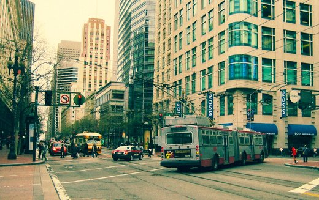
Photo credits
Reference images were resized and the After images were edited with the named preset.
- Jessica Watkins and Eileen Collins portraits by NASA, public domain. Jessica Watkins · Eileen Collins.
- Tunnel View in Yosemite by Ted Wakabayashi, released into the public domain. Source photo.
- Market Street by joshuadf, Shinjuku by Carles Tomás Martí, Nikon D750 by Henry Söderlund. CC BY 2.0. Market Street · Shinjuku · Nikon D750.
- Blue hour in Paris by salomon10. CC BY 2.0. Source photo.
- Redwoods, bald eagle and watercolor by Rosh, from Atelier’s bundled examples.

.jpg){kind=link}